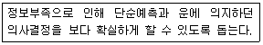
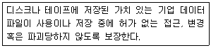
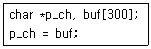
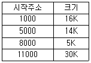
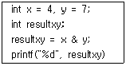
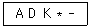
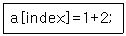

사무자동화산업기사 (2018-03-04 기출문제)
1과목: 사무자동화 시스템
1. 다음 중 그룹웨어의 주요 기능으로 가장 옳지 않은 것은?
- 정보공유 기능
- 의사결정 기능
- 업무흐름관리 기능
- 기획 기능
(정답률: 64%)

2. 다음 가상기억장치에 관한 설명이 가장 옳지 않은 것은?
- 주기억장치의 용량의 한계를 보조기억장치를 이용하여 극복한다.
- 페이징 또는 세그먼트 기법을 사용한다.
- 주기억장치와 보조기억장치가 계층기억체제를 이룬다.
- 주기억장치의 처리속도 향상을 위한 장치이다.
(정답률: 61%)
3. 다음 중 FTP에 대한 설명으로 틀린 것은?
- 원격 시스템과의 파일 송수신 기능을 제공한다.
- 명령 전송을 위한 제어 채널과 데이터 전송을 위한 데이터 채널을 사용한다.
- 클라이언트 서버의 접근 방식에 따라 Active 모드와 Passive 모드로 나뉜다.
- 네트워크 포트번호 80번을 사용한다.
(정답률: 72%)
4. 다음 중 전자결제(Electronic Pay) 시스템의 요건으로 가장 옳지 않은 것은?
- 사용자 프라이버시와 익명성을 보장한다.
- 안전한 결제를 위해 소액 결제는 방지한다.
- 안전하고도 다양한 대금 지불 방법을 지원한다.
- 거래 당사자의 신용확인을 위한 기반을 조성한다.
(정답률: 87%)
5. 인터넷이라는 가상공간을 통해 소비자와 기업이 상품과 서비스를 사고파는 행위로, 일반적인 상거래뿐만 아니라 고객 마케팅, 광고, 조달, 서비스 등을 포함하는 개념은?
- 가상은행
- 전자상거래
- 전자결제
- 전자우편
(정답률: 93%)
6. 데이터베이스의 구조에 대한 정의와 이에 대한 제약 조건 등을 기술한 것을 무엇이라 하는가?
- 스키마
- 데이터베이스 언어
- 도메인
- 엔티티
(정답률: 87%)
7. 다음 중 정보의 축소, 확대, 검색이 자유롭고 COM 시스템, CAR 시스템 등에서 사용되는 기억매체는?
- 마이크로필름
- 광디스크
- 자기테이프
- 감광지
(정답률: 67%)
8. 원격지의 컴퓨터를 인터넷을 통해 접속하여 자신의 컴퓨터처럼 사용할 수 있는 원격 접속 서비스는?
- FTP
- TCP/IP
- TELNET
- Z-MODEM
(정답률: 72%)
9. 다음 중 무선통신기술이 아닌 것은?
- ADSL
- Bluetooth
- Long Term Evolution
- HSDPA
(정답률: 67%)
10. 데이터베이스 시스템을 원활하게 수행하도록 데이터베이스의 전체적인 관리 운영에 대한 최고의 책임을 지는 개인 또는 집단을 의미하는 것은?
- DBA
- DBMS
- DBU
- DRM
(정답률: 55%)
11. 다음 중 POS 시스템과 가장 밀접하게 관계있는 것은?
- OA(office automation)
- MA(management automation)
- AA(accounting automation)
- SA(sales automation)
(정답률: 73%)
12. E-mail 관련 프로토콜이 아닌 것은?
- IMAP
- POP3
- SMTP
- VoIP
(정답률: 85%)
13. 사무자동화의 4대 기본요소를 가장 옳게 나열한 것은?
- 경영, 조직, 시스템, 기계
- 사무실, 장비, 정보화, 통신
- 인간, 자료, 자동화, 시스템
- 철학, 장비, 시스템, 인간
(정답률: 75%)
14. 회의나 발표, 브리핑 등에서 효과적으로 활용할 수 있는 텍스트를 비롯한 그래픽과 같은 멀티미디어 작업을 좀 더 간편하게 작성하고 자동화 시켜주는 소프트웨어로 가장 옳은 것은?
- 워드프로세서
- 데이터베이스
- 스프레드시트
- 프레젠테이션
(정답률: 89%)
15. 컴퓨터 프로그램의 사용자 인터페이스나 캐릭터의 외형을 바꾸는 그래픽, 오디오 파일 혹은 하드웨어 겉포장을 의미하는 것은?
- emoticon
- application
- illustration
- skin
(정답률: 82%)
16. 사용자가 한번만 기록할 수 있으며 한번 기록된 것은 다시 지울 수 없는 형태의 기록 장치는?
- DVD-RW
- CD-R
- CD-RW
- DVD+RW
(정답률: 86%)
17. 사무실 공간설계 방침과 가장 거리가 먼 것은?
- 문서 발생의 극대화
- 일의 흐름을 고려한 부문 배치
- 건강하고 쾌적한 사무환경 조성
- 미래 환경변화에 대비한 공간의 융통성 확보
(정답률: 81%)
18. 서류나 도면을 전기신호로 변환하여 전기통신 회선과 전파로 전송함으로써 다시 원래의 형태로 복원, 기록하는 전송기기는?
- PABX
- facsimile
- teleconference
- TPS
(정답률: 79%)
19. 다음 중 처리속도의 단위가 아닌 것은?
- CPS
- DPI
- LPM
- PPM
(정답률: 82%)
20. 두 테이블의 투플(tuple)들의 개수가 각각 m과 n이 라면 이 두 테이블을 프로덕트(product) 연산 했을 때 결과 테이블의 투플의 개수는?
- m+n
- m-n
- m×n
- m/n
(정답률: 74%)
2과목: 사무경영관리 개론
21. 사무에 대한 개념 중 사무의 연결 기능을 주장한 학자는?
- 힉스와 리틀필드
- 레핑웰과 달링톤
- 테일러와 테리
- 옵트너와 포레스터
(정답률: 74%)
22. 고객관계관리(CRM)의 기본 요소에 해당하지 않는 것은?
- 지식
- 목표
- 서비스
- 정보
(정답률: 41%)
23. 공인전자서명에 관한 요건으로 가장 거리가 먼 것은?
- 서명 당시 가입자가 전자서명 생성정보를 지배 및 관리하고 있을 것
- 전자서명 생성정보가 가입자에게 유일하게 속할 것
- 전자서명이 있은 후에 당해 전자문서의 변경 여부를 확인할 수 있을 것
- 행정기관에서 업무 담당자의 신원과 전자문서 변경 여부를 확인할 수 있을 것
(정답률: 57%)
24. 정보전달방식을 전자적으로 하는 것으로써 메시지를 컴퓨터에 축적하여 수신자가 검색, 출력하여 볼 수 있는 시스템을 무엇이라고 하는가?
- 팩시밀리 시스템(Facsimile System)
- 전자메일 시스템(Electronic Mail System)
- 마이크로필름 시스템(Microfilm System)
- CAR 시스템(Computer Assisted Retrieval System)
(정답률: 63%)
25. 사무간소화에 이용되는 동작연구와 시간연구의 기법과 가장 거리가 먼 것은?
- 인간 절차 도표
- 변형 도표
- 작업 도표
- 서식 경략 도표
(정답률: 46%)
26. 일반 직원들이 사용하는 사무실의 배치에서 대실(大室)주의의 이점으로 가장 옳지 않은 것은?
- 실내 공간의 이용도를 높일 수 있다.
- 상관의 감독을 어렵게 하며 그 범위를 좁힐 수 있다.
- 사무의 흐름을 직선화하는데 편리하며 직원 상호간 친밀도를 높인다.
- 부서별로 직원 상호간에 행동상의 비교가 이루어져 자유통제가 쉽다.
(정답률: 83%)
27. 다음 중 사무관리의 원칙과 가장 관계없는 것은?
- 용이성
- 주관성
- 정확성
- 신속성
(정답률: 78%)
28. 다음은 경영정보시스템(MIS)의 도입목적 중 어떤 것을 설명하는 것인가?

- 운영효율성
- 의사결정지원
- 경쟁우위
- 생존
(정답률: 87%)
29. 비즈니스인텔리전스(BI)의 순서로 가장 적합한 것은?
- 거래데이터 축적 → 패턴정보 찾기 → 데이터 및 패턴분석에 따른 의사결정
- 거래데이터 축적 → 데이터 및 패턴분석에 따른 의사결정 → 패턴정보 찾기
- 패턴정보 찾기 → 거래데이터 축적 → 데이터 및 패턴분석에 따른 의사결정
- 패턴정보 찾기 → 데이터 및 패턴분석에 따른 의사결정 → 거래데이터 축적
(정답률: 71%)
30. 조직과 조직 간에, 컴퓨터와 컴퓨터 간의 통신을 통하여 필요한 상거래 문서를 표준화된 형식으로 상호 교환하여 업무를 처리하는 방식으로 가장 옳은 것은?
- EDI(Electronic Data Interchange)
- E-Mail(Electronic-mail)
- LAN(Local Area Network)
- MAN(Metropolitan Area Network)
(정답률: 84%)
31. 전산망 관리와 운용에서 근거리 통신망(LAN)의 대표적인 토폴로지가 아닌 것은?
- 성(Star) 형
- 트리(Tree) 형
- 링(Ring) 형
- 박스(Box) 형
(정답률: 85%)
32. PERT 기법의 장점으로 가장 옳지 않은 것은?
- 계획공정(network)을 작성하여 분석하므로 간트도표에 비해 작업계획을 수립하기 쉽다.
- 계획공정의 문제점을 명확히 종합적으로 파악할 수 있다.
- 인원이나 특수 설비처럼 제한된 자원을 주공정과 상관없이 개별적으로 배치할 수 있다.
- 관계자 전원이 참가하게 되므로 의사소통이나 정보교환이 용이하다.
(정답률: 63%)
33. 다음 중 문서정리의 기본적인 절차는?
- 분류 → 보존 → 보관 → 폐기
- 보관 → 분류 → 보존 → 폐기
- 분류 → 보관 → 보존 → 폐기
- 보관 → 보존 → 분류 → 폐기
(정답률: 76%)
34. 경영정보시스템(MIS)와 가장 관계가 없는 시스템은 무엇인가?
- 거래처리시스템(TPS)
- 의사결정지원시스템(DSS)
- 전략정보시스템(SIS)
- 종합기상정보시스템(COMIS)
(정답률: 83%)
35. 정보보안 관리통제에서 다음의 설명은 무엇에 대한 일반통제유형인가?

- 소프트웨어 통제
- 컴퓨터운영 통제
- 데이터보안 통제
- 하드웨어 통제
(정답률: 85%)
36. 정보관리의 범위 및 기능으로 가장 거리가 먼 것은?
- 정보계획
- 정보통제
- 의사결정
- 정보처리
(정답률: 65%)
37. 다음 중 사무계획의 정의를 가장 바르게 설명한 것은?
- 사무목표와 실행결과의 편차를 수정하는 것이다.
- 사무인원의 충원과 적재적소 배치를 하는 활동이다.
- 사무문서의 표준화와 간소화를 수립하는 활동이다.
- 미래의 사무행동노선을 사전에 준비하는 과정이다.
(정답률: 53%)
38. 다음 중 사무표준화의 기대효과로 가장 옳지 않은 것은?
- 관리자는 사무원들을 감독하고 통제하기 용이하다.
- 공동이해 촉진과 통제의 강화로 인해 비용을 절감할 수 있다.
- 정책, 규격, 방법, 절차 등에 다양성을 가져온다.
- 직원들의 사기를 높여주며, 능력별로 활용할 수 있다.
(정답률: 65%)
39. 한 기업이 사업전략에 중대한 영향을 미칠 수 있는 요소들을 발견하기 위해 해당 기업의 강점, 약점, 기회, 위협을 평가하는 분석 기법은?
- OLTP
- OLAP
- SWAP
- SWOT
(정답률: 75%)
40. 국가 행정기관들을 통신망으로 연결하여 행정 정보를 공유할 수 있게 함으로써 대국민 서비스를 일괄적으로 처리할 수 있게 하는 국가기간 전산망은?
- 행정전산망
- 연구교육망
- 금융보험망
- 학내전산망
(정답률: 88%)
3과목: 프로그래밍 일반
41. BNF 표기법에서 기호“::=”의 의미는?
- 선택
- 정의
- 다시 정의될 대상
- 반복
(정답률: 88%)
42. 구문에 의한 문장 생성 과정을 나타내는 것으로서, 어떤 표현이 BNF에 의해 바르게 작성되었는지 확인하기 위해 만드는 트리는?
- 문법 트리
- 파스 트리
- 어휘 트리
- 구문 트리
(정답률: 79%)
43. 각 페이지마다 계수기나 스택을 두어 현 시점에서 가장 오랫동안 사용하지 않은 페이지를 교체하는 페이지 교체 기법은?
- LFU
- FIFO
- STACK
- LRU
(정답률: 76%)
44. 기계어에 대한 설명으로 옳지 않은 것은?
- 2진수 0과 1을 사용하여 명령어와 데이터를 나타낸다.
- 컴퓨터가 직접 이해할 수 있어 실행 속도가 빠르다.
- 전문적인 지식이 없으면 이해하기 힘들다.
- 모든 기계에서 공통으로 사용 가능하여 호환성이 높다.
(정답률: 78%)
45. EBNF에서 [ ]을 사용하는 이유는?
- 선택 사항 표현
- 블록(block) 표현
- 생략 가능한 것 표현
- 반복되는 부분 표현
(정답률: 70%)
46. C언어에서 변수 p_ch 에 대입되는 것과 같은 결과를 갖는 것은?

- p_ch = buf[0];
- p_ch = buf[1];
- p_ch =&buf[0];
- p_ch =&buf[1];
(정답률: 55%)
47. 원시 프로그램을 문자 단위로 스캐닝 하여 문법적으로 의미 있는 일련의 문자들로 분할해 내는 단위는?
- ID
- UNION
- TOKEN
- PARSE
(정답률: 84%)
48. 교착 상태의 발생 조건이 아닌 것은?
- 상호배제
- 점유하며 대기
- 비선점
- 자원요청
(정답률: 62%)
49. C언어에서 사용하는 키워드로 틀린 것은?
- auto
- typedef
- const
- dynamic
(정답률: 65%)
50. 주기억장치의 사용 가능 공간 리스트가 다음과 같을 때 새로운 13K의 프로세스를 30K 공백에 배치하였다. 이 때 사용된 메모리 배치 기법은?

- 최적적합(Best-Fit)
- 최악적합(Worst-Fit)
- 최초적합(First-Fit)
- 최후적합(Last-Fit)
(정답률: 84%)
51. C언어에서 다음 코드의 결과 값은?

- 0
- 4
- 7
- 11
(정답률: 38%)
52. 다음 후위식을 중위식으로 옳게 표현한 것은?

- D - (A * K)
- (A - D) * K
- A - (D * K)
- (A * D) - K
(정답률: 66%)
53. 원시 프로그램을 컴파일러가 수행되고 있는 컴퓨터의 기계어로 번역하는 것이 아니라, 다른 기종에 맞는 기계어로 번역하는 것은?
- Debugger
- Preprocessor
- Cross Compiler
- Linker
(정답률: 84%)
54. 로더의 기능 중 실행 프로그램을 실행시키기 위해 기억장치 내에 옮겨 놓을 공간을 확보하는 기능은?
- 연결
- 재배치
- 링커
- 할당
(정답률: 83%)
55. C언어에서 변수 사용 시 “r-value" 에 해당하는 것은?
- 모든 변수명
- 4와 같은 상수
- 배열 원소의 위치
- 포인터 자신의 값이 있는 위치
(정답률: 53%)
56. 프로그램 개발 과정에서 프로그램 안에 내재해 있는 논리적 오류를 발견하고 수정하는 작업은?
- Loading
- Debugging
- Linking
- Hashing
(정답률: 86%)
57. 컴파일러의 논리적 단계 중 자료형 검사(Type Checking)를 수행하는 단계는?
- 의미분석
- 구문분석
- 어휘분석
- 코드분석
(정답률: 30%)
58. 프로그램 수행 시 묵시적(implicit) 순서제어구조에 속하는 것은?
- 수식의 괄호를 사용하여 연산 순서 조절
- 반복문을 사용하는 순서제어
- GOTO문으로 실행 순서 변경
- 수식에서 괄호가 없으면 연산 우선순위에 의해 계산
(정답률: 76%)
59. 운영체제의 성능 평가 항목으로 거리가 먼 것은?
- 사용 가능도
- 반환 시간
- 처리 능력
- 비용
(정답률: 84%)
60. 다음 C 프로그램 문장에서 토큰의 개수는?

- 3
- 4
- 6
- 9
(정답률: 63%)
4과목: 정보통신 개론
61. OSI 7계층 참조모델 중 응용 프로세스 간의 정보교환, 전자사서함, 파일전송 등을 취급하는 계층은?
- 물리 계층
- 응용 계층
- 데이터링크 계층
- 전송 계층
(정답률: 43%)
62. 데이터 교환방식 중 축적 교환방식에 해당하지 않는 것은?
- 메시지 교환방식
- 회선 교환방식
- 데이터그램 패킷교환방식
- 가상회선 패킷교환방식
(정답률: 49%)
63. 통화 중에 이동전화가 한 셀에서 다른 셀로 이동할 때 자동으로 다른 셀의 통화 채널로 전환해 줌으로써 통화가 지속되게 하는 기능은?
- 핸드오프
- 핸드쉐이크
- 셀의 분할
- 페이딩
(정답률: 78%)
64. 광섬유 케이블의 기본 동작 원리는 무엇에 의해서 이루어 지는가?
- 산란
- 흡수
- 전반사
- 분산
(정답률: 84%)
65. 샤논(Shannon)의 정리에 따라 백색 가우스 잡음이 발생되는 통신선로의 용량(C)이 옳게 표시된 것은?(단, W : 대역폭, S/N : 신호대잡음비)
- C=W log2(1+S/N)
- C=2W 10(10+S/N)
- C=W2(S/N)
- C=3W 10(1+S/N)
(정답률: 71%)
66. 데이터 전송을 수행하는 경우, 전달 방향이 교대로 바뀌어 전송되는 교번식 통신 방법으로 무전기에 사용되는 것은?
- 반이중 통신
- 전이중 통신
- 단방향 통신
- 실시간 통신
(정답률: 76%)
67. 통신망 구성 형태 중 하나의 노드에 여러 개의 노드가 연결되어 있는 형태로, 각 노드가 계층적으로 구성되어 있는 망의 형태는?
- 트리(Tree)형
- 링(Ring)형
- 스타(Star)형
- 버스(Bus)형
(정답률: 73%)
68. 통신 프로토콜(Protocol)의 기본 요소가 아닌 것은?
- 구문
- 의미
- 순서
- 포맷
(정답률: 81%)
69. 16진 QAM의 전송 대역폭 효율은 몇 [bps/Hz]인가?
- 2
- 4
- 8
- 16
(정답률: 76%)
70. 변조속도가 1600[baud]이고, 트리비트(tribit)를 사용한다면 전송속도(bps)는?
- 1600
- 3200
- 4800
- 6400
(정답률: 82%)
71. 광대역 종합 정보 통신망인 ATM 셀(Cell)의 구조로 옳은 것은?
- Header : 5옥텟, Payload : 53 옥텟
- Header : 5옥텟, Payload : 48 옥텟
- Header : 2옥텟, Payload : 64 옥텟
- Header : 6옥텟, Payload : 52 옥텟
(정답률: 71%)
72. LAN에서 사용되는 매체 액세스 제어 기법과 관련 없는 것은?
- TOKEN-BUS
- XSMA
- CSMA/CD
- TOKEN-RING
(정답률: 67%)
73. 광섬유의 구조 손실에 해당하지 않는 것은?
- 다중 모드 손실
- 불균등 손실
- 코어 손실
- 마이크로밴딩 손실
(정답률: 44%)
74. HDLC의 프레임 구조에 포함되지 않는 것은?
- 스타트 필드(Start Field)
- 플래그 필드(Flag Field)
- 주소 필드(Address Field)
- 제어 필드(Control Field)
(정답률: 76%)
75. 검출 후 재전송(ARQ) 방법에 해당하지 않는 것은?
- Window-Control ARQ
- Stop-and Wait ARQ
- Go-back-N ARQ
- Selective-Repeat ARQ
(정답률: 76%)
76. 대역폭이 100[kHz]이고 신호대잡음비(S/N)가 15일 때, 채널용량[Kbps]은?
- 200
- 400
- 600
- 800
(정답률: 53%)
77. 데이터그램(datagram) 패킷교환방식에 대한 설명으로 틀린 것은?
- 수신은 송신된 순서대로 패킷이 도착한다.
- 속도 및 코드 변환이 가능하다.
- 각 패킷은 오버헤드 비트가 필요하다.
- 대역폭 설정에 융통성이 있다.
(정답률: 49%)
78. 다음 중 데이터 통신에서의 변조 방식이 아닌 것은?
- ASK
- PSK
- FSK
- ESK
(정답률: 80%)
79. ARQ 방식 중 데이터 프레임을 연속적으로 전송해 나가다가 NAK를 수신하게 되면, 오류가 발생한 프레임 이후에 전송된 모든 데이터 프레임을 재전송하는 것은?
- Go-back-N ARQ
- Selective-Repeat ARQ
- Window-Control ARQ
- Adaptive ARQ
(정답률: 78%)
80. 다음 중 16-QAM에서 16은 무엇의 개수를 나타내는가?
- 위상
- 진폭
- 위상과 진폭의 조합
- 주파수
(정답률: 74%)